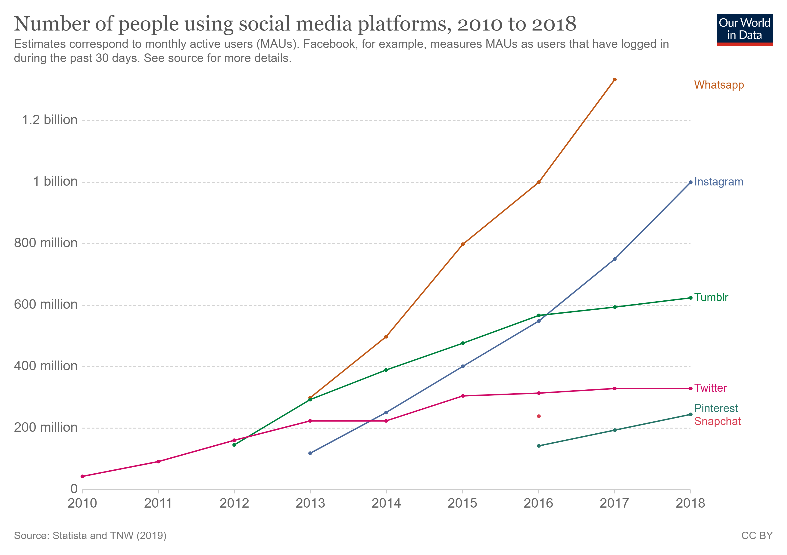
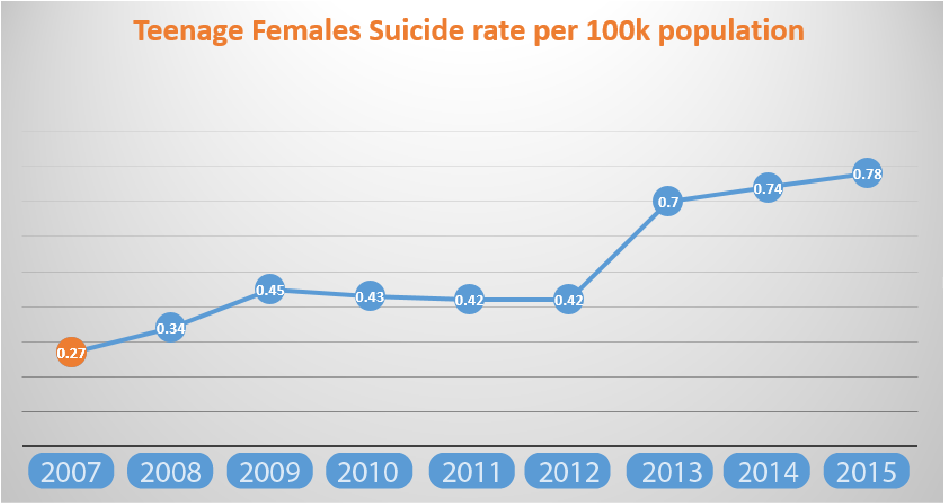
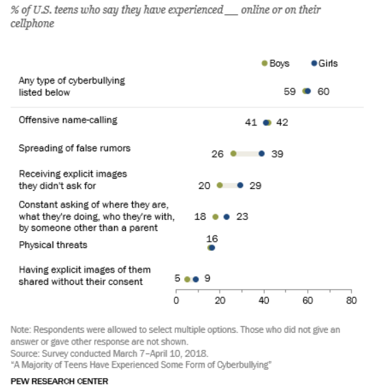

By: Mohamed Hamdy Othman Ibrahim 17110082000
Social Media Effect On Teen’s Suicide Rate And Self-harm
Social media is one of the main causes of teen’s self-harm.

In recent years a lot of researchers are trying to find if there is a correlation between social media usage and depression and self-harm. Nowadays since everything is becoming digital our usage of social media platforms keeps increasing, and since it’s a new thing it might be having a negative effect on us while we are unaware. Before the internet and social media children and teens were only getting exposed to getting bullied outside their house (for example at school or at soccer practice), but now days if they are using social media the chances of them getting bullied increases because of the enormous amount of people on social media that might interact with them, with one click children are exposed to millions of people. According to survey conducted in 2018 between 750 teens whose age varies between 13-17 years old, they found out that 45% of them are constantly online and 97% of them had at least 1 social media account (Tumblr, Instagram, YouTube, Snapchat, and Facebook). And it even gets worse Boys’ depression increased by 21% between 2012 and 2015, and girls’ increased by 50%.
Social media usage started increasing by 2012 as we see in the graph above, and according to the other dataset that I analyzed between 2012-2015 teen girls suicide rates in the US nearly double in the same year that social media usage started increasing, so if you are still asking is social media related to this increase in self-harm and suicide rates in teens? It is certainly related, and all the patterns in the data indicates that.
Why is it worse for girls do you ask? Well this table shows that boys and girls are exposed to bullying equally online, but girls are more likely to be a center of a false rumor and receiving explicit images they didn’t ask for.
Social media is obviously a big reason for unhealthy mentality for teens, so there should be some kind of restrictions for teens and kids from their parents or from the companies that owns these platforms. As a parent we can limit these effects by simply monitoring their social media accounts, talking to them about their underlying problems more openly, encouraging social media breaks, and teaching them that social media isn’t an accurate representation of one’s true identity and self. Social media is a double edged sword and we are responsible for what happens next, the real question lies here is social media a bless or a curse?